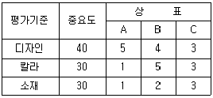
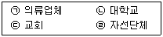
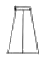
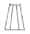
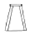
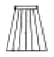
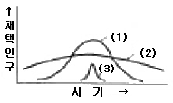

패션머천다이징산업기사 (2005-08-07 기출문제)
1과목: 패션마케팅
1. 패션점포에서 판매원의 역할에 대한 설명으로 틀린 것은?
- 패션상품에 대한 전문지식을 가지고 코디네이션을 제안하는 역할을 한다.
- 판매상품에 대한 매출을 조사 분석하여 차기 시즌 상품구성에 반영시킨다.
- 패션 점포의 이미지를 향상시키기 위해 고객에게 최고의 서비스를 제공한다.
- 디자이너와 머천다이저와 함께 상품기획의 방향설정에 일정한 역할을 한다.
(정답률: 알수없음)

2. 패션 프랜차이즈 시스템(예:대리점)은 패션 경로 유형 중 어디에 해당하는가?
- 관리형 VMS (수직적 마케팅 유통경로)
- 기업형 VMS (수직적 마케팅 유통경로)
- 계약형 VMS (수직적 마케팅 유통경로)
- 수평적 마케팅 유통경로
(정답률: 알수없음)
3. 대중을 대상으로 하는 매장의 시즌 초의 상품 구성 계획으로 상품에 대한 소비자 선호도를 테스트하기 위한 상품구성 계획은 무엇이 바람직한가?
- 넓고 얕은 구성
- 좁고 얕은 구성
- 좁고 깊은 구성
- 넓고 깊은 구성
(정답률: 알수없음)
4. 패션 머천다이징 과정에 있어 디자인 개발 단계에 속하지 않는 것은?
- 생산 관리 설정
- 컬러 이미지 설정
- 소재 기획 설정
- 디테일 방향 설정
(정답률: 알수없음)
5. 절약형 고객에게 가장 맞는 가격전략은?
- 할인가격
- 정상가격
- 고가격
- 환원가격
(정답률: 알수없음)
6. 다음 중 마케팅 관리자가 표적고객의 욕구충족을 통해서 기업목적을 달성하기 위해 사용하는 마케팅 수단인 마케팅믹스(4P's mix)가 아닌 것은?
- 제품 (product)
- 가격 (price)
- 촉진 (promotion)
- 프로그램 (program)
(정답률: 알수없음)
7. 상품기획부분의 총괄자로서 상품계획에서 판매에 이르기까지 광범위한 직무 영역을 가지고 새로운 브랜드 개발과 기획 및 운영을 하는 사람은?
- 패션디자이너
- 디스플레이어
- 머천다이저
- 판매사
(정답률: 알수없음)
8. 어패럴 메이커의 시장세분화와 마케팅 전략에 대한 설명이다. 잘못된 것은?
- 차별적 마케팅 전략 - 자사만의 독특한 개성이 담긴 상품 및 서비스의 개발
- 비차별적 마케팅 전략 - 소비자의 동일성에 상품개발의 의의를 두는 전략
- 집중적 전략 - 총체적 시장의 점유율을 높이기 위한 전략, 최대다수의 소비자 만족
- 완전 시장 세분화 전략 - 특정 고객 개개인의 기호를 위한 상품의 개발
(정답률: 알수없음)
9. 구매기능에 따른 구매방법이 아닌 것은?
- 각점사입
- 소비자별 사입
- 공동사입
- 집중사입
(정답률: 알수없음)
10. 다음표는 패션 브랜드 A, B, C의 가상적인 속성 점수표이다. 사전편집식에 의해 상표를 선택한다면 어느 상표가 선택될 수 있는가?

- A
- B
- C
- 모두 선택
(정답률: 알수없음)
11. 수요의 가격탄력성이 낮아지는 경우에 대한 설명이 맞는 것은?
- 자사제품이 경쟁제품과 비교하여 특이한 제품특성이 없을 때
- 소비자가 제품가격이 높음을 인식할 때
- 경쟁제품 혹은 대체품이 없거나 소수일 때
- 소비자들이 고가격제품을 구매하지 않을 때
(정답률: 알수없음)
12. 마케팅에서는 특정 대상으로부터 원하는 것을 얻고 그 반대 급부로 무엇인가를 제공해야 한다. 이 과정에서 쌍방간에 마케팅 가치의 측정 수준은?
- 교환
- 수요
- 공급
- 거래
(정답률: 알수없음)
13. 어떤 소비자가 수트(suit)를 사기 위해 여러 점포들을 방문하며 비교하고 선택했다면, 이 수트(suit)는 소비자의 구매습관에 따른 패션 제품의 분류 중 어디에 속하는가?
- 전문품
- 편의품
- 선매품
- 중점제품
(정답률: 알수없음)
14. 상품 그레이드(grade)와 패션수용도에 따른 상품분류가 잘못 짝지워진 것은?
- 프레스티지 상품(Prestige): 이미지 향상을 위한 디스플레이 상품
- 패션상품 (Fashion): 다가오는 패션을 예고하는 상품
- 바겐상품(Bargain): 바겐세일을 할 상품 또는 패션이나 시즌의 피크를 지난 상품
- 스테이플 상품(Staple): 중요상품
(정답률: 알수없음)
15. 다음 보기 중 마케팅을 수행하는 기관을 모두 고르시오.

- ㉠
- ㉠, ㉡
- ㉠, ㉡, ㉢
- ㉠, ㉡, ㉢, ㉣
(정답률: 알수없음)
16. 고객 관계 관리(CRM : Customer Relationship Management) 마케팅의 대표적 특징에 해당되지 않는 것은?
- 고객의 1 : 1 관리
- 고객의 시간가치 존중
- 고객 세그멘테이션
- 고객에게 가장 편리한 채널 제공
(정답률: 알수없음)
17. 리테일 머천다이징의 고유기능이 아닌 것은?
- 고객의 수요를 정확하게 예측한다.
- 팔릴만한 제품을 기획, 생산한다.
- 효율적인 판매촉진을 사용한다.
- 판매실적을 분석한다.
(정답률: 알수없음)
18. 패션 머천다이저에 대한 설명으로 옳지 않은 것은?
- 패션 머천다이저는 일반적으로 리테일 머천다이저와 어패럴 머천다이저로 나눌 수 있다.
- 패션 머천다이저는 상품기획부문의 총괄자로서 상품계획에서 판매부문에 이르기까지 광범위한 직무영역을 가지고 새로운 브랜드 개발과 기획 및 운영을 하는 사람이다.
- 리테일 머천다이저는 상품기획 및 개발로부터 시장도입에 이르기까지의 일련의 마케팅활동을 수행하는 패션스페셜리스트이다.
- 어패럴 머천다이저는 어패럴 메이커의 경우, 정보분석업무, 상품기획업무, 생산업무, 판매 및 판매 촉진업무를 총괄하고, 각 부문의 유기적인 코디네이트를 담당하는 스페셜리스트로서 프로덕트 매니저라고도 한다.
(정답률: 알수없음)
19. 리테일 머천다이저는 구매계획, 판매촉진계획, 판매계획, 상품구매, 구매관리, 재고관리 등을 총괄하는 스페셜리스트로서 미국이나 일본의 일부 기업에서는 ( )라고 칭하는 경우도 있다. 다음 빈칸에 알맞은 단어는?
- 바이어
- 스타일리스트
- 프로덕트 매니저
- 패션 컨버터
(정답률: 알수없음)
20. 쇼윈도우 연출 중 조명의 효과를 잘 조절하면 극적인 분위기를 연출할 수 있으며, 연극의 무대를 연출하듯 자유롭게 이미지를 창출할 수 있는 쇼윈도는?
- 반개방형
- 섬형(Island window)
- 폐쇄형
- 소형 윈도우(shadow box)
(정답률: 알수없음)
2과목: 패션소재기획
21. 혼방 섬유의 일반적인 목적으로 적합하지 않는 것은?
- 단일 섬유에서 얻을 수 없는 촉감
- 단일 섬유의 기능 보완 역할
- 단일 섬유 보다 높은 가격
- 단일 섬유에서 얻을 수 없는 텍스처 효과
(정답률: 알수없음)
22. 울소재와 감성분류의 연결이 적합한 것은?
- 두꺼운 - 모슬린
- 평평한 - 코듀로이
- 부드러운 - 베니션
- 젖은 - 서커
(정답률: 알수없음)
23. 일명 캐시미어가공(cashmere finishing)이라고 하며, 방모소재와 금속단추로 이루어진 남성정장 자켓의 이미지와 부합하는 기모 가공 방법은?
- 피치스킨가공 (Peach-skin Finishing)
- 모스가공 (Moss Finishing)
- 벨루어가공 (Velour Finishing)
- 비버가공 (Beaver Finishing)
(정답률: 알수없음)
24. 겨울 오버코트(Over-Coat)용으로 많이 사용되는 방모직물 중 기모가공의 소재 종류로 적합하지 않은 것은?
- 모스(Moss) 가공 소재
- 멜톤(Melton) 가공 소재
- 벨루어(Velour) 가공 소재
- 캐시미어(Cashmere) 가공 소재
(정답률: 알수없음)
25. T/W는 어느 섬유에 속하는가?
- 폴리우레탄 + 면
- 폴리에스테르 + 양모
- 나일론 + 양모
- 폴리아미드 + 폴리우레탄
(정답률: 알수없음)
26. 소재기획에 있어서 정보의 관계에 대한 설명 중 적합하지 않는 것은?
- 소재기획은 패션트렌드의 정보수집에서 출발한다.
- 패션정보는 시간이 지나면 유효성이 감소하는 특성이 있다.
- 살아 있는 정보를 소재기획에 활용하기 위해서는 시기 선정에 유의해야 한다.
- 패션전문회사의 정보분석시기는 소재전문회사의 분석시기보다 약 6개월에서 1년 정도 일찍 시작된다.
(정답률: 알수없음)
27. 이색현상 중 소재의 폭방향으로 이색이 나타나는 현상을 무엇이라 하는가?
- 엔딩(Ending)
- 리스팅(Listing)
- 마이그레이션(Migration)
- 염반
(정답률: 알수없음)
28. 일반적으로 진즈웨어 (Jeans-wear)에 가장 많이 사용하는 인디고 데님의 염색방법은?
- 톱염색 (Top Dyeing)
- 사염색 (Yarn Dyeing)
- 포염색 (Piece Dyeing)
- 가먼트염색 (Garment Dyeing)
(정답률: 알수없음)
29. 다음 중 케라틴(keratin)으로 구성된 단백질 섬유가 아닌 것은?
- 양모
- 인모
- 헤어섬유
- 피브로인
(정답률: 알수없음)
30. 항균, 방취 등의 위생가공처리가 우수한 의류 및 섬유 제품에 부여하는 품질 마크는?
- 굳헬스 마크(Good Health Mark)
- Q 마크
- 골드 다운 마크(Gold Down Mark)
- 무포르말린 마크(Free Formalin Mark)
(정답률: 알수없음)
31. 다음 중에서 현미경으로 관찰한 단면 형태가 원형이 아닌 것은?
- 비스코스 레이온(viscose rayon)
- 큐프라(cupra)
- 폴리노직 레이온(polynosic rayon)
- 나일론(nylon)
(정답률: 알수없음)
32. 부직포의 특징이 아닌 것은?
- 함기량이 많다.
- 강도가 좋다.
- 방향성이 없다.
- 탄성과 레질리언스가 좋다.
(정답률: 알수없음)
33. 실의 굵기를 표시하는데 항장식 번수인 데니어(Denier)를 사용하는 섬유인 것은?
- 면(綿)사
- 모(毛)사
- 폴리에스테르사
- 마(麻)사
(정답률: 알수없음)
34. 아웃도어용 레져웨어, 특히 여름용 골프웨어를 기획하는데 있어서 가장 적절한 소재는?
- 축열보온소재
- 자외선차단소재
- 방향소취소재
- 온감변색소재
(정답률: 알수없음)
35. 면섬유의 특징이 아닌 것은?
- 흡습성이 좋아 위생적이다.
- 내구성이 좋고 세탁이 편리하다.
- 정전기를 발생시키지 않아 위생적이다.
- 레질리언스가 좋아 구김이 잘 생기지 않는다.
(정답률: 알수없음)
36. 실에 넵, 슬럽 등이 있어 불균일한 굵기의 실을 이용하여 제직한 직물은 균일한 실에서 느낄 수 없는 개성으로 내추럴한 이미지를 주게 되는데, 다음 중 이러한 직조방법으로 얻은 내추럴한 감성을 가지는 직물이 아닌 것은?
- 노일실크
- 샨퉁직물
- 트위드(tweed)
- 랑킹마
(정답률: 알수없음)
37. 직물의 표면에 요철을 주거나 오톨도톨한 감촉을 주기 위하여 사용하는 가공법이 아닌 것은?
- 염축 가공
- 플리스(plisse) 가공
- 엠보스(emboss) 가공
- 캘린더(calender) 가공
(정답률: 알수없음)
38. 패션정보의 발표 시기를 연결한 것 중 맞지 않는 것은?
- 유행색 제안 - 24개월 전
- 방적, 합섬메이커의 자기회사 트렌드 컬러 발표 - 12개월 전
- 컬렉션 및 제품전시회 - 12개월 전
- I.W.S(국제양모사무국)와 I.I.C(국제면업진흥회)의 유행색 결정 - 18개월에서 12개월
(정답률: 알수없음)
39. 기본이 되는 원사에 섬유 및 솜덩어리가 부분적으로 뭉쳐있는 실로 덩어리의 색상에 따라 복고풍, 로맨틱, 에스닉 등 다양한 이미지를 주는 장식사의 명칭은?
- 넵사(Nep yarn)
- 캠피사(Kempy yarn)
- 루프사(loop yarn)
- 이색연사(Grandelle yarn)
(정답률: 알수없음)
40. 다음 중 패션 트렌드(fashion trend)테마를 감성 기준에 따라 분류 할 경우 설명이 틀린 것은?
- 엘레강스(Elegance) : 고상한, 우아한, 여성스러운
- 로맨틱(Romantic) : 화려한, 장식적인, 영화 같은
- 컨트리(Country) : 활동적인, 경쾌한, 캐주얼한
- 엑조틱(Exotic) : 전통적인, 역사적인, 민속풍의
(정답률: 알수없음)
3과목: 유통관리 및 광고
41. 유통개념에 관한 설명으로 부적절한 것은?
- 패션제품이 생산자로부터 소비자에게 도달할 때까지의 과정이다.
- 제품의 물리적인 이동은 상류라 하고, 매매거래에 의해 제품의 소유권이 이동하는 흐름을 물류라고 한다.
- 제품의 부가가치를 창조하는 기업활동이다.
- 소비자가 원하는 장소, 물량, 품질, 가격으로 제품과 서비스를 공급하는 것이다.
(정답률: 알수없음)
42. 옥외광고의 특징을 잘못 서술한 것은?
- 충동구매를 자극할 수 있다.
- 전략적 접근이 가능하다.
- 계속적 광고효과를 기대할 수 있다.
- 조명효과가 크다.
(정답률: 알수없음)
43. 광고관리 과정을 순차적으로 연결한 것은?
- 광고 메시지, 매체 결정 → 광고목적 설정 → 광고예산결정 → 광고효과 측정
- 광고효과 측정 → 광고목적 설정 → 광고예산결정 → 광고메시지, 매체 결정
- 광고목적 설정 → 광고예산 결정 → 광고 메시지, 매체결정 → 광고효과 측정
- 광고예산 결정 → 광고목적 설정 → 광고효과측정 → 광고메시지, 매체 결정
(정답률: 알수없음)
44. 광고의 기능에 대한 설명으로 부적합한 것은?
- 소비자들이 갖고 있는 제품이나 상표에 대한 지식, 이미지, 믿음, 태도에 영향을 준다.
- 기업이나 상표에 대한 인식을 구축하는데 가장 유력한 도구이다.
- 지나친 광고 경쟁은 소비자들에게 광고혼란을 야기하여 광고를 외면하게 하는 역기능을 초래한다.
- 브랜드 선호도 구축에서 비용당 목표 도달율이 다른 커뮤니케이션 매체에 비해 다소 떨어진다.
(정답률: 알수없음)
45. QRS 에 대하여 설명한 것 중 잘못된 것은?
- QRS를 통해 최종소비자는 다양한 상품구색과 서비스향상을 제공하지만, 높은 가격이 단점이라 할 수 있다.
- QRS의 목적은 적절한 상품과 서비스를 소비자가 원하는 시간과 장소에 적정가격으로 공급하기 위함이다.
- QRS는 원래 미국내로 수입되는 개발도상국의 의류제품에 대한 방어가 목적이었다.
- QRS는 공급자와 고객기업간의 커뮤니케이션을 활성화시켜 소비자의 욕구를 최대한 반영한다.
(정답률: 알수없음)
46. 상품 계획에 대한 내용이 잘못된 것은?
- 재정계획이 질적인 계획에 비하여 상품계획은 양적인 계획이다.
- 상품계획은 이익, 손실을 예방한다.
- 적정장소, 적정상품, 적정가격, 적정수량, 적정시기에 맞는 상품을 확보하는 것이다.
- 바이어의 예측력을 검증할 수 있다.
(정답률: 알수없음)
47. 다음 중 매장의 내부환경에 해당되는 것은?
- 도시구조
- 교통조건
- 편의시설
- 고객환경
(정답률: 알수없음)
48. 독창적인 비주얼 머천다이징을 통한 마케팅효과로 보기 어려운 것은?
- 상품의 가치창조를 표현함으로써 소구력을 향상시킨다.
- 점포 아이덴티티(store identity)를 형성하게 한다.
- 상품기획에서 판매현장까지 업무의 관장 범위가 광범위하여 추가적인 전문 인력의 공급이 필요하다.
- 접객업무의 비효율성을 방지하고 물류시스템을 효율적으로 운영함으로써 기업이윤을 증대시킨다.
(정답률: 알수없음)
49. 구매계획을 수립하는 올바른 순서는?
- 아이템결정－구매금액결정－구매시기결정
- 구매방법결정－구매시기결정－아이템결정
- 구매시기결정－구매방법결정－아이템결정
- 구매금액결정－구매시기결정－구매처결정
(정답률: 알수없음)
50. 바이어는 상품의 구매에 있어서 발주의 타이밍을 초기의 소량발주와 피크시 인기 주종상품의 재발주로 나눈다. 다음 중 테스팅 마켓(testing market)으로서 초기 발주의 성격이 아닌 것은?
- 소비자의 반응을 체크해보는 단계이다.
- 상품구색은 광범위하지 않으며 구색은 깊은 상태로 주문한다.
- 바이어는 재발주시 상품의 재생산, 운반 등에 소요되는 리드 타임이 필수불가결함을 염두에 둔다.
- 리드타임 기간에 변화할 가능성이 있는 소비자의 패션 사이클 변화추이도 의식하여야 한다.
(정답률: 알수없음)
51. 패션유통 소매업에 대한 설명으로 적합지 않는 것은?
- 백화점은 패션과 서비스를 강조하기 때문에 어느 수준 이상의 고객을 목표로 한다.
- 할인점은 할인가격으로 상품을 구매하여 판매하고, 서비스를 제한함으로써 낮은 가격으로 판매한다.
- 아웃렛스토어는 재고상품, 품질이 고르지 않은 상품 등을 저가에 판매하는 곳이다.
- 무점포 소매업은 중간유통단계의 생략, 매장 운영비절감 등으로 저렴한 가격의 판매가 가능하다.
(정답률: 알수없음)
52. 상품구성 중 패션제품에서 상품구성의 폭에 해당하는 것은?
- 스타일 수
- 스타일 당 컬러 수
- 스타일 당 사이즈 수
- 가격대
(정답률: 알수없음)
53. 구매업무(구매실무)를 설명한 것 중 틀린 것은?
- 최적의 상품구색을 갖추기 위해서는 적기에 매장에 조달될 수 있도록 구매처를 선정하는 것이 중요하다.
- 적절한 상품구색을 갖추기 위해서는 사입처와의 커뮤니케이션이 중요하다.
- 바이어는 사입처 측에 상품정보를 제공할 수 있다.
- 주된 사입처 한군데를 선정하여 꾸준히 신뢰관계를 쌓아가는 것이 바람직하다.
(정답률: 알수없음)
54. 좋은 지역을 선택하여 인상적인 광고 효과를 줄 수 있으나, 소비자에게는 공격적인 것으로 간주될 수 있는 광고 매체는?
- 직접우편
- 전화
- 잡지
- 옥외광고
(정답률: 알수없음)
55. 상품구성을 바르게 설명한 것은?
- 중점상품은 유행을 타는 상품을 말한다.
- 전략상품은 싼 가격의 판촉상품이나 고급품 등을 의미한다.
- 보완상품은 참신한 디자인의 신제품을 포함한다.
- 기업이나 소매점의 수준 향상을 목적으로 하는 상품은 중점상품이다.
(정답률: 알수없음)
56. 패션을 추구하는 고객을 상대하는 고급샵의 상품 구성은 일반적으로 어떤 형태가 적합한가?
- 소품종 다량구성
- 소품종 소량구성
- 다품종 다량구성
- 다품종 소량구성
(정답률: 알수없음)
57. 쉽게 파손되기 쉬운 상품, 고가품 또는 악세서리 등을 진열시에 사용되는 집기로서 고객이 쉽게 접근할 수 없는 진열집기는?
- 스테이지(Stage)
- 쇼 케이스(Show case)
- 선반(Shelve)
- 행어(Hanger)
(정답률: 알수없음)
58. VMD의 설명 중 틀린 것은?
- 고객이 지향하는 이미지를 구체화하는 전략수단이다.
- 판매현장의 단순한 장식적인 요소에 포인트를 둔다.
- 상품기획, 구매, 판매, 판촉활동에 이르기까지 모든 경영적인 요소의 포괄적인 시각에서 전개한다.
- 상품의 기획, 구매단계에서 최종 소비자에게 상품을 어떻게 어필시킬 것인가를 미리 계획하는 것이다.
(정답률: 알수없음)
59. 일반적인 봄 시즌 영업계획의 지침으로 가장 적합한 것은?
- 소비자의 상품 구매패턴은 기온 변화에 민감하므로 적시 공급이 가장 중요하다.
- 시즌 전반은 합성직물, 면, 울, 혼방 등 비교적 얇은 소재 상품이 중심을 이루나 후반은 소모나 퀼팅 등 두꺼운 소재 상품에 주력한다.
- 일년 중 기온차가 가장 심하고 사회적 행사가 비교적 많고 목적구매의 욕구가 높다.
- 지구온난화의 영향으로 종래와 같은 방한 기능 상품에 대한 욕구가 약해지고 있음에 주의해야 한다.
(정답률: 알수없음)
60. PB(Private Brand)를 전개할 때 소매업 측면의 장점이 아닌 것은?
- 소매점은 높은 수익률을 올릴 수 있다.
- 상품 불만에 유통업자가 직접 대응할 수 있다.
- 상품개발 노하우를 축적할 수 있다.
- 판매정보를 상품개발에 직접 반영할 수 있다.
(정답률: 알수없음)
4과목: 패션디자인론 및 의복구성학
61. 다트의 위치를 이동시켜 새로운 원형을 만드는 과정을 무엇이라 하는가?
- 다트 머니퓨레이션
- 다트 플리츠
- 요크
- 다트 풀리스
(정답률: 알수없음)
62. 영화배우, TV탤런트, 유명인에 의해서 패션이 퍼져나가는 유행의 전파설은?
- 집합선택설
- 상향전파설
- 하향전파설
- 수평전파설
(정답률: 알수없음)
63. 여성복의 경우 엉덩이 둘레-가슴둘레를 뜻하는 용어는?
- 기본 신체치수
- 피트(fit) 성
- 볼륨 (volume)
- 드롭 (drop)
(정답률: 알수없음)
64. 봉제작업에 필요한 실과 바늘 선택과 관련하여 잘못 설명되어진 것은?
- 바늘의 굵기에 맞는 굵기의 봉사를 선택해야 한다.
- 옷감의 두께에 따라 얇은 감에는 14-18호, 두꺼운 감에는 9-11호 바늘을 사용한다.
- 손바느질에서는 견사가 제일 바느질하기에 용이하며 시침에는 목면실을 사용하는 것이 좋다.
- 실의 엉김을 막기 위해서는 실의 길이를 너무 길게 하지 않아야 한다.
(정답률: 알수없음)
65. 1999년에 개정된 피트성을 필요로 하는 여성복 치수규격에 적용된 체형타입이 아닌 것은?
- H Type
- N Type
- A Type
- Y Type
(정답률: 알수없음)
66. 길원형과 소매가 따로 제도, 재단되어 길원형의 진동에 달리는 소매는?
- 래글런 슬리브(Raglan Sleeve)
- 기모노 슬리브(Kimono Sleeve)
- 돌먼 슬리브(Dolman Sleeve)
- 레그 오브 머튼 슬리브(Leg of Mutton Sleeve)
(정답률: 알수없음)
67. 다음중에서 옷감의 안과 겉을 구별하는 방법으로 올바르지 않은 것은?
- 옷감의 식서 부분이나 단쪽에 문자나 표식이 찍혀있는 쪽이 안이다.
- 능직으로 짠 모직물의 경우 능선이 오른쪽 위에서 왼쪽 아래로 되어 있는 쪽이 겉이다.
- 날염 옷감은 프린트 문양이 선명한 쪽이 겉이다.
- 첨모직물의 경우는 털이 분명하지 않은 쪽이 안이다.
(정답률: 알수없음)
68. 필라멘트사를 방적사로 피복하여 강도는 면사와 필라멘트사의 중간 정도이며 봉제성이 우수하고 다른 합섬사에 비해 내열성과 내마모성이 우수한 재봉사는?
- 면봉사
- 머서화한 봉사
- 폴리에스테르 봉사
- 코아봉사
(정답률: 알수없음)
69. 다음 중 빨강색으로 고명도, 저채도인 색은?
- 주황색
- 분홍색
- 자주색
- 보라색
(정답률: 알수없음)
70. 아칸더스 식물의 잎과 줄기의 부드러운 곡선이 모티브가 되며, 전체적으로 장식성이 강한 특징을 지닌 사조가 낳은 스타일은?
- S자 스타일
- 버슬 스타일
- 벨에포크 스타일
- 미너렛 스타일
(정답률: 알수없음)
71. Maslow가 정리한 인간의 욕구수준의 단계가 정확히 연결된 것은?
- 생리적 욕구 → 안전과 보장의 욕구 → 사회적 욕구 → 자기 실현 욕구 → 자아의 욕구
- 안전과 보장의 욕구 → 생리적 욕구 → 자아의 욕구 → 사회적 욕구 → 자기실현 욕구
- 안전과 보장의 욕구 → 생리적 욕구 → 사회적 욕구 → 자아의 욕구 → 자기실현 욕구
- 생리적 욕구 → 안전과 보장의 욕구 → 사회적 욕구 → 자아의 욕구 → 자기실현 욕구
(정답률: 알수없음)
72. 다음 소매 중 소매산이 가장 낮은 소매는?
- 벨(Bell) 소매
- 벌룬(Balloon) 소매
- 줄리엣(Juliet) 소매
- 돌만(Dolman) 소매
(정답률: 알수없음)
73. 데니어(denier)의 설명으로 옳은 것은?
- 실이 가늘수록 숫자가 커진다.
- 1파운드 실의 타래수에 근거를 둔다.
- 840야드가 1g이면 1데니어이다.
- 실의 굵기를 나타내는 항장식의 단위이다.
(정답률: 알수없음)
74. 일반적으로 미니스커트가 유행할 때 상의의 길이가 길어지고, 롱 플레어스커트가 유행할 때 상의의 길이가 짧아지는 경향이 있다. 이는 디자인의 원리 중 어디에 해당하는가?
- 리듬
- 비례
- 균형
- 강조
(정답률: 알수없음)
75. 다음 중 세로선에 의한 착시로 세로효과가 가장 큰 것은 무엇인가?




(정답률: 알수없음)
76. 유행의 특성이 아닌 것은?
- 개인적인 현상이다.
- 가장 지배적인 스타일이다.
- 사회 및 시대의 반영이다.
- 대중의 수용이다.
(정답률: 알수없음)
77. 먼셀컬러시스템에 대한 설명으로 맞는 것은?
- 정확한 정삼각형 모양을 이룬다.
- 색의 혼합비를 알기 쉽게 표현하였다.
- 모든 색을 완전히 흡수하는 이상적인 흑색을 B라 한다.
- 색상(Hue), 명도(Value), 채도(Chroma)로 나타낸다.
(정답률: 알수없음)
78. 생산의뢰서 작성 시 기입해야 할 항목이 아닌 것은?
- 표준 시간
- 공정 순서
- 사용 바늘, 실
- 장소
(정답률: 알수없음)
79. 다음 그림은 제품이 시기별로 확산이 이루어지는 정도를 표현하는 확산곡선이다. 각각의 곡선에 해당되는 항목이 제대로 연결되어 있는 것은?

- (1)클래식 - (2)포드(ford )- (3)패드(fad)
- (1)패션 - (2)클래식 - (3)모드(mode)
- (1)패션 - (2)클래식 - (3)패드(fad)
- (1)패션 - (2)모드(mode) - (3)클래식
(정답률: 알수없음)
80. 가격결정의 요인에 대한 설명 중 틀린 것은?
- 가격결정의 원칙은 경쟁의 원칙, 가격봉사의 원칙, 경영 유지 발전의 원칙, 시장 점유율의 원칙이 있다.
- 최대이윤의 획득과 적정이윤의 확보, 시장 점거율의 유지 및 확대 등 구체적인 목표를 두고 진행한다.
- 고객층의 특성과 패션경향이 크게 작용하기 때문에 물성적 가치에 심리적인 효용가치가 합치된 것을 고려하여야 한다.
- 가격결정시 고려요인은 심리적요인, 기업의 가격정책, 마케팅 믹스 영향력, 타분야의 영향력 등이 있다.
(정답률: 알수없음)
5과목: 패션정보분석
81. 다음 항목 중에서 소비자 정보에 속하지 않는 것은?
- 고객의 라이프스타일 분석
- 구매동기 및 구매패턴 조사
- 상품기획 조사
- 광고효과 조사
(정답률: 알수없음)
82. 다음 패션 정보원 중 컬러에 대한 정보원은?
- Moda In
- Premiere Vision
- Inter Stoff
- Promostyl
(정답률: 알수없음)
83. 기업환경 정보의 내용으로 옳은 것은?
- 판매 및 판매촉진전략을 조사한다.
- 매출실적과 판매율, 성장률을 조사한다.
- 경쟁사의 주력, 인기, 비인기 품목을 조사한다.
- 문화예술 발전 동향을 조사한다.
(정답률: 알수없음)
84. 시장정보 중 경쟁사 정보분석으로 옳지 못한 것은?
- 소재별 소비경향 조사
- 매출실적과 판매율, 성장률 조사
- 해외 기술 도입에 관한 정보 조사
- 제품의 제조기술 조사
(정답률: 알수없음)
85. 신규 점포에 대한 상권 분석을 위한 방법이 아닌 것은?
- 점포의 내부 자료
- 기술적 조사방법
- 규범적 모형
- 확률적 모형
(정답률: 알수없음)
86. 여러 회사의 제품이 함께 진열되어 이들간의 경쟁이 심한 일반 백화점이나 복합 패션전문점과는 달리 제조업체가 취급하는 자사의 모든 의류와 장신구를 전시함으로써 제조업자가 원하는 이미지를 연출할 수 있는 점포의 형태는?
- 사입형 패션 전문점
- 제조 소매업(SPA)
- 메이커 토탈샵(Maker Total Shop)
- 멀티 브랜드 샵(Multi-Brand Shop)
(정답률: 알수없음)
87. 패션 정보처리에 대한 설명 중 옳은 것은?
- 패션 정보의 처리 순서는 수집 → 분석 → 분류 → 보관이다.
- 해외 패션정보처리 기관은 프로모스틸사, 인터패션플래닝 등이 있다.
- 해외 패션 정보는 자사의 표적시장에 적합한가에 대한 판단력이 필요하다.
- PC(Personal Computer)를 이용한 정보처리 시스템은 정보 추가나 시스템 보강이 불필요하다.
(정답률: 알수없음)
88. 색채 정보 분석법으로 옳지 못한 것은?
- 그래프 작성 및 분석
- 설문지법에 의한 분석
- 컬러 테이블 작성 및 분석
- 그룹핑에 의한 도해 작성과 분석
(정답률: 알수없음)
89. 패션정보수집 및 분석의 타이밍 중 틀린 것은?
- 24개월 전에 컬러정보 입수를 한다.
- 18개월 전에 소재정보 입수를 한다.
- 12개월 전에 의류패턴과 봉재 스펙이 완성되어야 한다.
- 컬렉션은 보통 6개월 전에 한다.
(정답률: 알수없음)
90. 생활의 장으로 본 현대인의 4대 생활공간(Life stage)중 관혼상제 등에 해당되는 용어로 적합한 것은?
- City Life
- Home Life
- Formal Life
- Leisure Life
(정답률: 알수없음)
91. 패션경향을 기초로 하여 각 아이템별로 아이디어의 발상 및 이미지의 전개를 위한 참고자료로 작성하는 것은?
- 스타일링 맵
- 아이템 챠트
- 디자인 맵
- 소재 스와치 맵
(정답률: 알수없음)
92. 스타일정보 분석에 있어서 그래프에 의한 시계열적 변화 분석방법이 아닌 것은?
- 디자인, 디테일의 구성비율 집계를 낸다.
- 전체적인 룩 이미지의 다변량 해석을 실시한다.
- 수집한 스타일정보의 룩 이미지를 변량으로 변화시켜 스타일의 분포상태를 관찰한다.
- 각 스타일의 사진이나 일러스트를 몇 개의 그룹으로 나누어 평면에 배치하여 시계열적 변화를 관찰한다.
(정답률: 알수없음)
93. 질문지를 작성할 때 고려해야 할 사항으로 맞는 것은?
- 소득, 학력, 직업등 사적인 질문은 서두에 배치한다.
- 한 질문에 두 가지 이상의 내용을 질문한다.
- 어려운 질문은 서두에, 평이하고 흥미를 유발하는 질문은 후반부에 배치한다.
- 질문형태는 개방형 질문과 선택형 질문으로 나누어진다.
(정답률: 알수없음)
94. 국내 섬유제품을 해외 유명 브랜드를 능가하는 수준으로 향상시키고 세계일류 상품으로 경쟁력을 제고하기 위한 품질 보증제도는?
- 명품 마크
- 중소기업 우수제품 마크
- 기능 마크
- 품질보증 마크
(정답률: 알수없음)
95. 소비자 정보 중 생산자와 소매상인들이 상품 판매에 성공하기 위해 가장 먼저 파악해야 할 것은?
- 상품의 광고 효과
- 소비자의 욕구와 필요
- 소비자의 수입
- 작년도 소비자 명단
(정답률: 알수없음)
96. 다음 중 패션 디자인을 위한 패션정보의 6대 요소가 아닌 것은?
- 패션 테마(Fashion Theme)
- 패션 인플루언스(Fashion Influence)
- 패션 디테일(Fashion Detail)
- 패션 사이클(Fashion cycle)
(정답률: 알수없음)
97. 색채기획 중 컬러테마 설정, 테마별 컬러 이미지 맵 작성에 해당하는 것은?
- 컬러 컨셉 설정
- 컬러 스토리 설정
- 패션 포케스팅
- 마켓 정보 수집
(정답률: 알수없음)
98. 다음 중 소재정보의 분석 내용이 아닌 것은?
- 섬유의 종류
- 염색가공법
- 의복착용 연출 분위기
- 신소재의 기능성
(정답률: 알수없음)
99. 브랜드에 대해 얼마나 알고 있느냐에 관한 조사를 무엇이라 하는가?
- 의식 조사
- 선호도 조사
- 착용경향 조사
- 인지도 조사
(정답률: 알수없음)
100. 상품기획에 필요한 정보를 제공하는 출처가 아닌 것은?
- 시장정보
- 소비자정보
- 작업장 환경정보
- 학술정보
(정답률: 알수없음)
이유: 판매원은 매출 조사 및 분석을 담당하는 것이 아니라, 주로 고객에게 패션 상품에 대한 전문적인 조언과 코디네이션 제안, 그리고 최고의 서비스 제공을 위한 역할을 한다. 판매원이 매출 조사 및 분석을 담당하는 경우도 있지만, 이는 판매원의 역할 중 하나일 뿐이다. 상품 구성에 대한 결정은 주로 머천다이저나 디자이너 등 다른 직군에서 이루어진다.